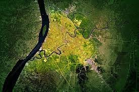

Sejarah

Kota Banjarmasin sebelum tahun 1526 adalah nama kampung yang
terletak di bagian utara muara Sungai Kuin, yaitu kawasan Kelurahan
Kuin Utara dan Alalak Selatan saat ini. Banjarmasin berasal dari
kata Banjarmasih, nama asli Banjarmasin sebelum dirobah nama oleh
Belanda dari kata Banjarmasih. Dalam kontrak di abad ke-17 (tahun
1663) dengan VOC masih kita dapatkan istilah Bandzermasch
(Banjarmasih). Banjarmasih adalah nama suatu kampung di muara sungai
Kuyin, sebuah anak sungai Barito, Muara Kuyin terletak antara pulau
Kembang dan pulau Alalak. Kampung Banjar Masih terbentuk oleh lima
aliran sungai kecil, yaitu Sungai Sipandai, Sungai Sigaling, Sungai
Keramat, Sungai Jagabaya dan Sungai Pangeran yang semuanya bertemu
membentuk sebuah danau. Kata Banjar berasal dari Bahasa Melayu yang
berarti kampung atau juga berarti berderet-deret sebagai letak
perumahan kampung berderet sepanjang tepian sungai.
Geografis

Kota Banjarmasin terletak pada 3°15' sampai 3°22' Lintang Selatan
dan 114°32' Bujur Timur, ketinggian tanah asli berada pada 0,16 m di
bawah permukaan laut dan hampir seluruh wilayah digenangi air pada
saat pasang. Kota Banjarmasin berlokasi daerah kuala sungai
Martapura yang bermuara pada sisi timur Sungai Barito. Letak Kota
Banjarmasin nyaris di tengah-tengah Indonesia.
Kota ini terletak di tepian timur sungai Barito dan dibelah oleh
Sungai Martapura yang berhulu di Pegunungan Meratus. Kota
Banjarmasin dipengaruhi oleh pasang surut air laut Jawa, sehingga
berpengaruh kepada drainase kota dan memberikan ciri khas tersendiri
terhadap kehidupan masyarakat, terutama pemanfaatan sungai sebagai
salah satu prasarana transportasi air, pariwisata, perikanan dan
perdagangan.
Menurut data statistik 2001 dari seluruh luas wilayah Kota
Banjarmasin yang kurang lebih 98,46 km² ini dapat dipersentasikan
bahwa peruntukan tanah saat sekarang adalah lahan tanah pertanian
3.111,9 ha, perindustrian 278,6 ha, jasa 443,4 ha, permukiman adalah
3.029,3 ha dan lahan perusahaan seluas 336,8 ha. Perubahan dan
perkembangan wilayah terus terjadi seiring dengan pertambahan
kepadatan penduduk dan kemajuan tingkat pendidikan serta penguasaan
ilmu pengetahuan teknologi.
Wisata
Kota Banjarmasin memiliki berbagai objek wisata, baik wisata alam,
wisata sejarah, wisata kuliner, maupun wisata pendidikan.
Festival Budaya Pasar Terapung

Festival Budaya Pasar Terapung adalah sebuah festival tahunan yang
berlangsung di Kota Banjarmasin, Provinsi Kalimantan Selatan.
Festival ini dilaksanakan oleh Dinas Pariwisata Provinsi
Kalimantan Selatan dan menampilkan budaya sungai yang ada di
Kalimantan Selatan.[1] Selain menampilkan budaya sungai, festival
ini juga menggelar berbagai lomba, seperti lomba acil Pasar
Terapung, lomba foto, balap jukung, lomba kampung Banjar, ada pula
hiburan rakyat.
Masjid Sultan Suriansyah

Masjid Sultan Suriansyah atau Masjid Kuin adalah sebuah masjid
bersejarah di Kota Banjarmasin yang merupakan masjid tertua di
Kalimantan Selatan. Masjid ini dibangun pada masa pemerintahan
Sultan Suriansyah (1526-1550), Raja Banjar pertama yang memeluk
agama Islam. Masjid Kuin merupakan salah satu dari tiga masjid
tertua yang ada di kota Banjarmasin pada masa Mufti Jamaluddin
(Mufti Banjarmasin), masjid yang lainnya adalah Masjid Besar
(cikal bakal Masjid Jami Banjarmasin) dan Masjid Basirih.
Masjid ini terletak di Jalan Kuin Utara, Kelurahan Kuin Utara,
kawasan yang dikenal sebagai Banjar Lama merupakan situs ibu kota
Kesultanan Banjar yang pertama kali. Masjid ini letaknya
berdekatan dengan komplek makam Sultan Suriansyah dan di tepian
kiri sungai Kuin.